Pomoću navedenih tipki na tastaturi mijenjajte veličine odsječaka.
odsječak m na x-osi: tipke A i D
odsječak n na y-osi: tipke Q i E
odsječak p na z-osi: tipke S i W
m12.0n16.0p17.0
Segmentni oblik jednadžbe ravnine
Opći oblik jednadžbe ravnine u prostoru glasi 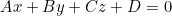 pri čemu je 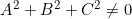.
U slučaju da su neki od brojeva 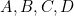 jednaki nula, ravnina se nalazi u nekom specijalnom položaju s obzirom na koordinatni sustav.
Ukoliko je svaki od brojeva različit od nule, tada ravnina siječe koordinatne osi u tri međusobno različite točke. U tom slučaju njezin opći oblik jednadžbe može se napisati u segmentnom obliku pri čemu je 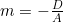, 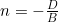, 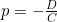 .
Brojevi 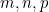 su segmenti koje ravnina odsijeca na koordinatnim osima. U tom slučaju ravnina prolazi točkama 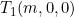, 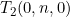 i 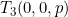.
Segmentni oblik jednadžbe ravnine nam omogućuje da brzo odredimo položaj ravnine u prostoru na temelju predznaka pojedinih segmenata. Iz segmentnog oblika jednadžbe ravnine slijedi da svaka ravnina koja nije u specijalnom položaju s obzirom na koordinatni sustav se prostire kroz 7 oktanata, dok u jednom oktantu nema niti jednog djelića te ravnine.
Na primjer, ako za segmente ravnine vrijedi 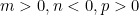, tada možemo zaključiti sljedeće:
U oktantu za kojeg vrijedi 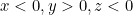 ne nalazi se niti jedan djelić te ravnine.
U oktantu za kojeg vrijedi 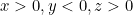 nalazi se samo dio ravnine omeđen s trokutom.
U svim ostalim oktantima se nalaze preostali neomeđeni dijelovi ravnine.
Analogni zaključci vrijede za sve ostale kombinacije predznaka segmenata , što možete provjeriti s ovim programom. Napravite analogiju s pravcem u ravnini i kvadrantima.
U gornjem desnom kutu prozora možete odabrati jednu od osam mogućih kombinacija predznaka brojeva . Automatski se vizualizira pripadna ravnina.
U gornjem lijevom kutu su prikazane informacije o trenutno odabranoj ravnini. Također, pomoću spomenutih tipki na tastaturi možete mijenjati veličine odsječaka s odabranim predznacima i pritom se automatski mijenja ravnina.
Informacije o ravnini možete po želji otvoriti ili zatvoriti klikom na tipku u gornjem lijevom kutu prozora.
Pomoću srednje tipke miša možete približavati ili udaljavati kameru od objekta, a pomoću lijeve tipke miša možete se kretati oko objekta.